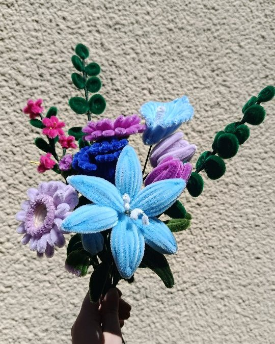

Bouquets · fait main
Bouquet bleu et violet
64 € 8 fleurs × 8 €
Fait main dans les Ardennes, emballé avec soin, avec sa carte de vœux offerte.
La création
« C’est une commande que j’ai reçue, et la voici terminée ! N’hésitez pas à me commander un bouquet à votre image. »
Laurine, Flore & Chenilles
Un bouquet composé pour une commande, en bleu et violet. Vos couleurs, vos fleurs préférées, votre occasion : je peux composer le vôtre, rien que pour vous.
Ce bouquet compte 8 fleurs, à 8 € la fleur ; le feuillage est offert.
Ce qui est compris
- Façonné à la main, à la commande, dans mon atelier de Signy-l’Abbaye.
- Emballé dans une pochette transparente fermée d’un nœud.
- Une carte de vœux offerte, avec le message de votre choix.
Commander
- Ouvrez cette création sur le site et ajoutez-la à votre sélection.
- Écrivez le message de votre carte de vœux, offerte.
- Envoyez votre demande : je vous confirme la date. Retrait gratuit à l’atelier de Signy-l’Abbaye, ou livraison à 5 € jusqu’à 15 km et 10 € jusqu’à 25 km.